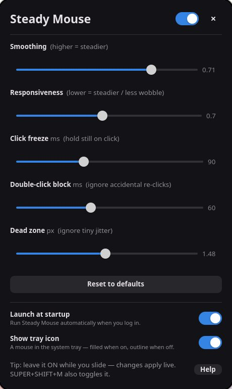
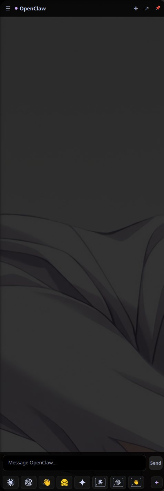
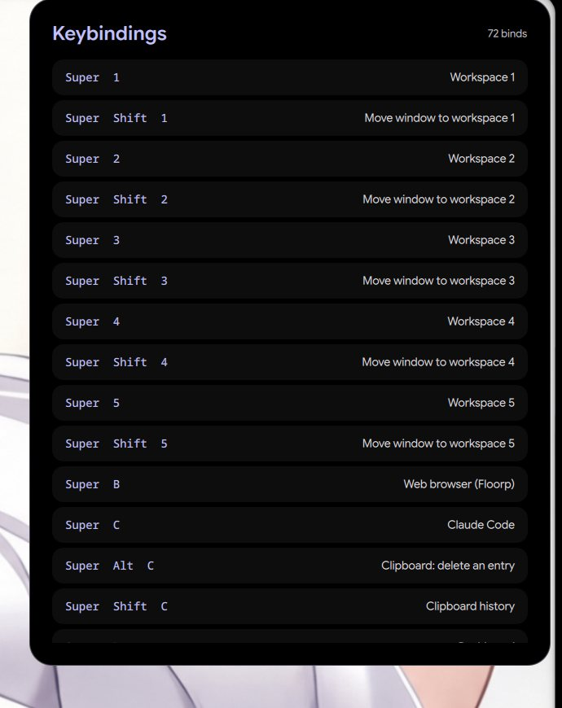
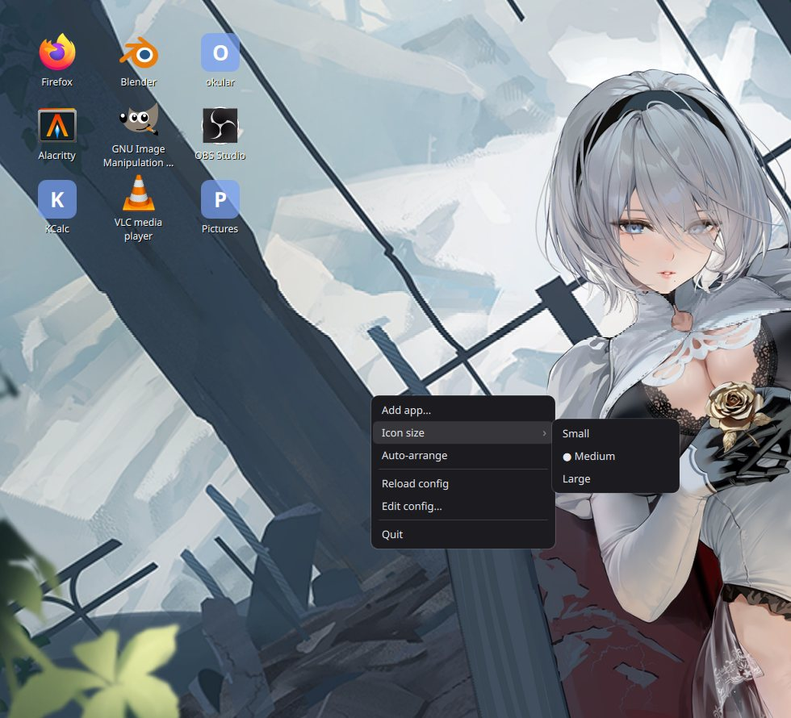

Desktop Manager keeps a whole Linux desktop in one place. It is a snapshot of this machine’s look and configuration — themes, login screen, window rules, shell and editor — with a one-click picker to restore it on a fresh install. Below it are the small, single-purpose tools it can install for you.

What it installs
Start herethe app
utility
utility utility
utility
utility
utilityThe desktop itself
Before any of the tools, Desktop Manager restores the look: the KDE Plasma theme, the SDDM login screen, Hyprland rices and the configs to match — in stages, with a dry-run so you can see what it will do before it does anything.
 themes & rices
themes & rices
Looking for the creative apps?
Desktop Manager also installs just a… CREATORsuite — ground-up recreations of the Serif creative line (WEBcreator, PAGEdesigner, PAINTcanvas, DRAWmaster). They live in their own project.
See the whole family on one page › · Browse the Creative suite ›
Restore a whole machine
On a fresh Arch / CachyOS install, clone once and run the installer —
--dry-run first to preview, then for real. Individual stages
(files, packages, services, sddm) can be run
on their own; only sddm needs sudo.
git clone https://github.com/janszafranski/desktop-manager.git ~/system-replica
cd ~/system-replica
./scripts/install.sh --dry-run # preview everything, change nothing
./scripts/install.sh # packages + files + sddm + services
./scripts/install-launcher.sh # add "Desktop Manager" to your app menu